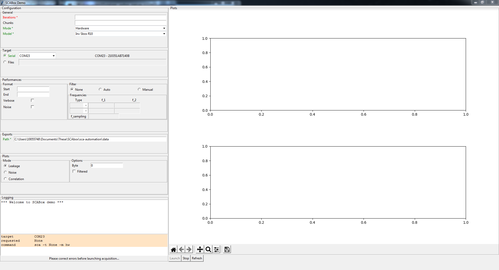
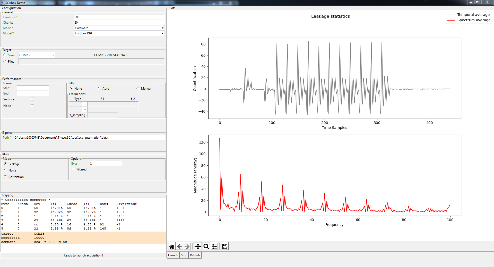
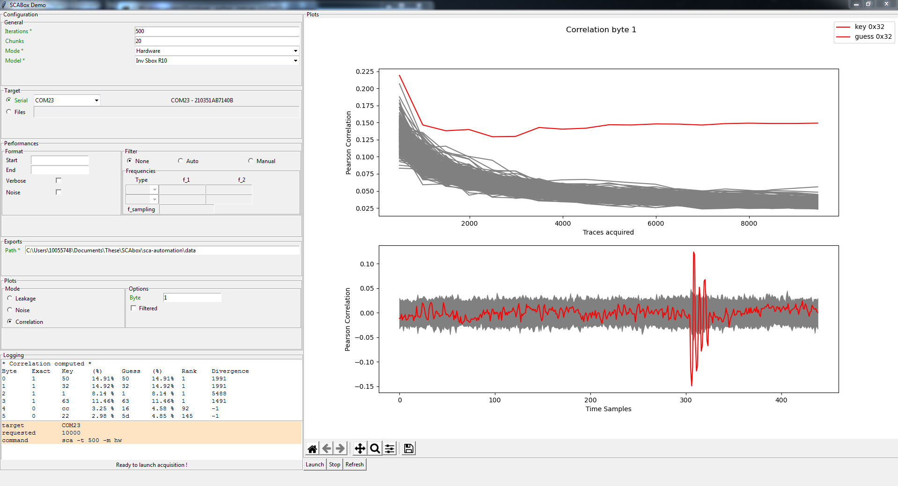

#1 - Run the Pre-Built Demo¶
Duration: 20-30 min
Goals¶
In this tutorial you will conduct your first FPGA-based side-channel attack in three steps:
Download the Application Image
Launch the Demo
Collect the AES Leakage
Summary: This tutorial do not require any software tool installation or programming. It uses a pre-built boot image available on github that can be loaded into a micro SD card to launch the demo. The image contains an FPGA bitstream that embeds time-to-digital converter sensors (TDC) and a hardware AES. It also contains a software program that we will serve as an interface to communicate with your computer through serial port. At the end of this tutorial you will conduct a correlation power analysis attack using the AES leakage collected using TDCs.
Requirements¶
A Zynq board
A micro SD card
A micro USB cable
Any terminal emulator such as PuTTY, TeraTerm or picocom
Python version \(\geq\) 3.8
Note
Because it uses pre-built images, this tutorial is board dependent. Currently, two boards are supported: Digilent Zybo z7-10 and Digilent Zybo z7.
{kind=link}
Emulator setup¶
The terminal emulator allows to communicate via UART with the SoC. It must be configured properly in order to work and allow command typing. Bellow is given the emulator configuration used :
port is : /dev/ttyUSBx
flowcontrol : none
baudrate is : 921600
parity is : none
databits are : 8
stopbits are : 1
local echo is : yes
Note
If your terminal provide it, you can also use the local line edit.
Port name can vary according to your OS, eg. on windows its COMx
Tutorial¶
The tutorial starts here
1. Load the boot image inside the SD card¶
Insert the SD card into your computer
Format the SD card.
Copy the BOOT.bin image that matches your board reference
Eject the SD card
Note
The folder containing the images is located in your_path/SCAbox/sca_demo_tdc_aes/image
2. Launch the Demo¶
Insert the SD card into the Zybo board card slot.
Place the jumper 5 in SD boot position
Connect the Zybo to your computer using the micro USB cable
Power on the Zybo and wait for the green led “DONE” to illuminate.
Note
If the “DONE” led is off, press the “PS-SRST” button. If it remains off the image is probably not compatible with your board, or the SD card is not supported. Please check the requirement section at the beginning of this tutorial.
{kind=link}
Start the serial communication with the parameters given in the Emulator setup section at the beginning of this tutorial
Press the “PS-SRST” button, the following welcome message should appear
{kind=link}
You can now use the available serial commands to perform AES encryptions, side-channel acquisitions, etc. If you want to learn more about available commands please follow the Tuto #3.
3. Collect the AES Leakage¶
To facilitate the data acquisition and visualisation SCAbox comes with a simple application built in python. This application connects directly to the Zynq board through a serial communication and can exchange data and commands with the device.
Note
The project is compatible with Python 3.8 and latter. It is platform independent.
To install the automation tool you must clone the sources from GitHub and install the pip requirements:
$ git clone https://github.com/emse-sas/sca-automation
$ cd sca-automation
$ pip3 install -r requirements.txt
Then launch the main.py python file with your board serial port as an argument.
$ cd sca-automation/app
$ sudo python3 main.py -t /dev/ttyUSB1
The following view should appear:
{kind=link}
Select the following parameters
Iteration: 500
Chunk: 20
Mode: HW
Model: Inv Sbox R10
This will launch 500*20 = 10000 AES acquisitions and compute CPA on the last round.
Press Launch
The AES leakage can be easily recognized thanks to its ten characteristic rounds that create high power consumption spikes. The magnitude spectrum plotted in the bottom indicates the leakage amplitude at each frequency.
{kind=link}
Select Correlation
Two plots illustrate the CPA attack results for a specific key byte (here byte 1). On the top, we can see the correct key candidate (in red) emerging from the other candidates (in gray) after less than 100 acquisitions. On the bottom the temporal representation indicates that the key leaks around the sample 300. The actual implementation of the LastRound CPA works only on the 4 first bytes of the AES.
{kind=link}